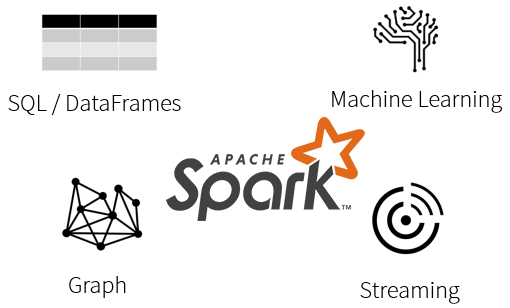
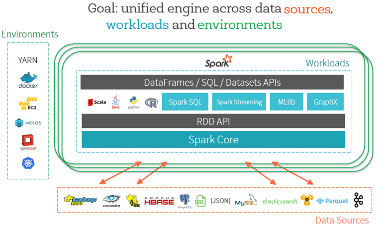
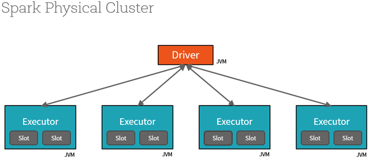
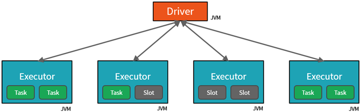
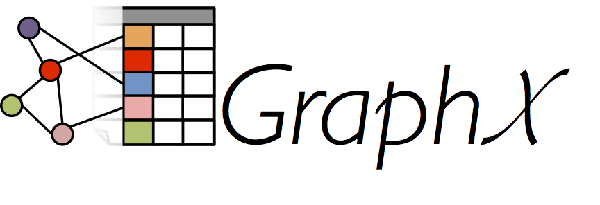

class: center, middle # Introduction to Big Data Analytics using Python and Apache Spark <img src="images/spark.png" width="200" height="100" /> <img src="images/python-logo.png" width="200" height="100" /> .institution[### November 17, 2016] .center[### Kingston,Jamaica] --- class: center, middle # *who?* .author[Leotis Buchanan] .center[### email: leotisbuchanan@gmail.com] .center[### Data Engineer @ RBC Canada] --- # What will we talk about? - What is this thing called Spark? - How Sparks works - What is it good for? - Getting started with Spark - SparkSQL,DataFrames and DataSets(hands on) - Next steps --- # What is this thing called Spark? Spark is a unified processing engine that can analyze big data using SQL, machine learning, graph processing or real time stream analysis:  --- #### Spark can read from many different databases and file systems and run in various environments:  --- # How Sparks works Spark Driver and Workers  --- A Spark program is two programs: - A driver program and a workers program - Worker programs run on cluster nodes or in local threads - Data is distributed across the workers node. --- The Driver sends Tasks to the empty slots on the Executors when work has to be done:  --- # What is it good for? - Realtime Fraud detection in finance Industry - Product recommendations in the eccomerce - Video Streaming - Realtime transportation analytics --- # The Spark Computing Framework <img src="images/spark-stack.png" width="600" height="400" /> --- # Spark SQL - Spark SQL is a Spark module for structured data processing --- # Spark Streaming - Spark Streaming is an extension of the core Spark API that enables scalable stream processing of live data streams <img src="images/streaming-arch.png" width="600" height="350" /> --- # MLlib and ML - MLlib is Spark’s machine learning (ML) library. Its goal is to make practical machine learning scalable and easy. --- # GraphX - GraphX is a new component in Spark for graphs and graph-parallel computation.  --- # Getting started with Spark ### Python Spark (PySpark) Spark applications can be written using: - Java,Scala,R,Python via PySpark For this workshop we will be using PySpark. #### PySpark - an easy-to-use abstraction for developing large scale distributed applications using apache spark. --- # Writing Spark applications in Python. - You can use the pyspark library to implement spark applications in python - see the documentation here [PySpark Docs]http://spark.apache.org/docs/latest/api/python/ --- The typical structure of a spark application written in python is shown below: --- ```python ## Spark Application - execute with spark-submit ## Imports from pyspark import SparkConf, SparkContext ## Module Constants APP_NAME = "My Spark Application" ## Closure Functions ## Main functionality def main(spark): pass if __name__ == "__main__": # Configure Spark spark = SparkSession\ .builder\ .appName("PythonWordCount")\ .getOrCreate() # Execute Main functionality main(spark) ``` --- # Concretely ``` ## Spark Application - execute with spark-submit ## Imports from __future__ import print_function import sys from operator import add from pyspark.sql import SparkSession ## Module Constants APP_NAME = "Word Count" ## Closure Functions def getWords(line): words = line.split(' ') return words ``` --- ```python ## Main functionality def main(spark): lines = spark.read.text(sys.argv[1]).rdd .map(lambda r: r[0]) counts = lines.flatMap(getWords) \ .map(lambda x: (x, 1)) \ .reduceByKey(add) output = counts.collect() for (word, count) in output: print("%s: %i" % (word, count)) spark.stop() ``` --- ```python if __name__ == "__main__": # Configure Spark if len(sys.argv) != 2: print("Usage: wordcount <file>", file=sys.stderr) exit(-1) spark = SparkSession\ .builder\ .appName("PythonWordCount")\ .getOrCreate() # Execute Main functionality main(spark) ``` --- # SparkSQL,DataFrames and DataSets(hands on) #### DataSets - Dataset is a distributed collection of data. - A Dataset can be constructed from JVM objects and then manipulated using functional transformations (map, flatMap, filter, etc.). - The Dataset API is available in Scala and Java. Python does not have the support for the Dataset API. --- #### DataFrame - dataframe is a Dataset organized into named columns. - conceptually equivalent to a table in a relational database or a data frame in R/Python - DataFrames can be constructed from many sources: - structured data files - external databases - The DataFrame API is available in Scala, Java, Python --- class: center, middle # Questions? --- # See you in the hands on session --- # Resources and References - [Apache Spark Home Page](http://spark.apache.org/) - [Apache Spark Youtube Channel](https://www.youtube.com/user/TheApacheSpark) - [Free Training](https://www.edx.org/) - [Programming Guide](http://spark.apache.org/docs/latest/programming-guide.html) - [Python Guide](http://spark.apache.org/docs/latest/api/python/index.html) - [PySpark](http://spark.apache.org/docs/latest/api/python/pyspark.sql.html)